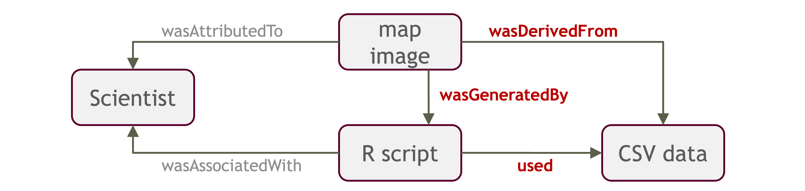
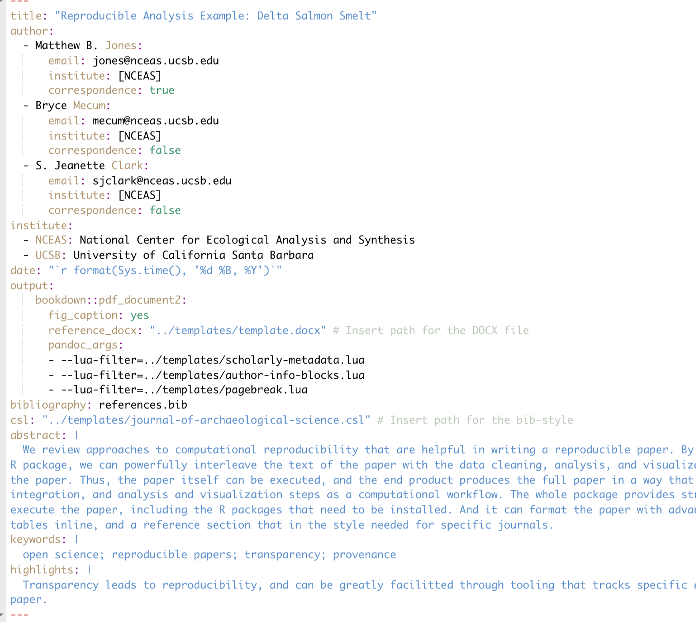
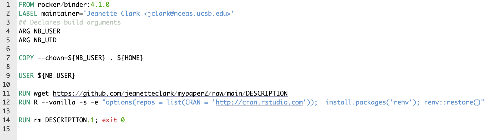
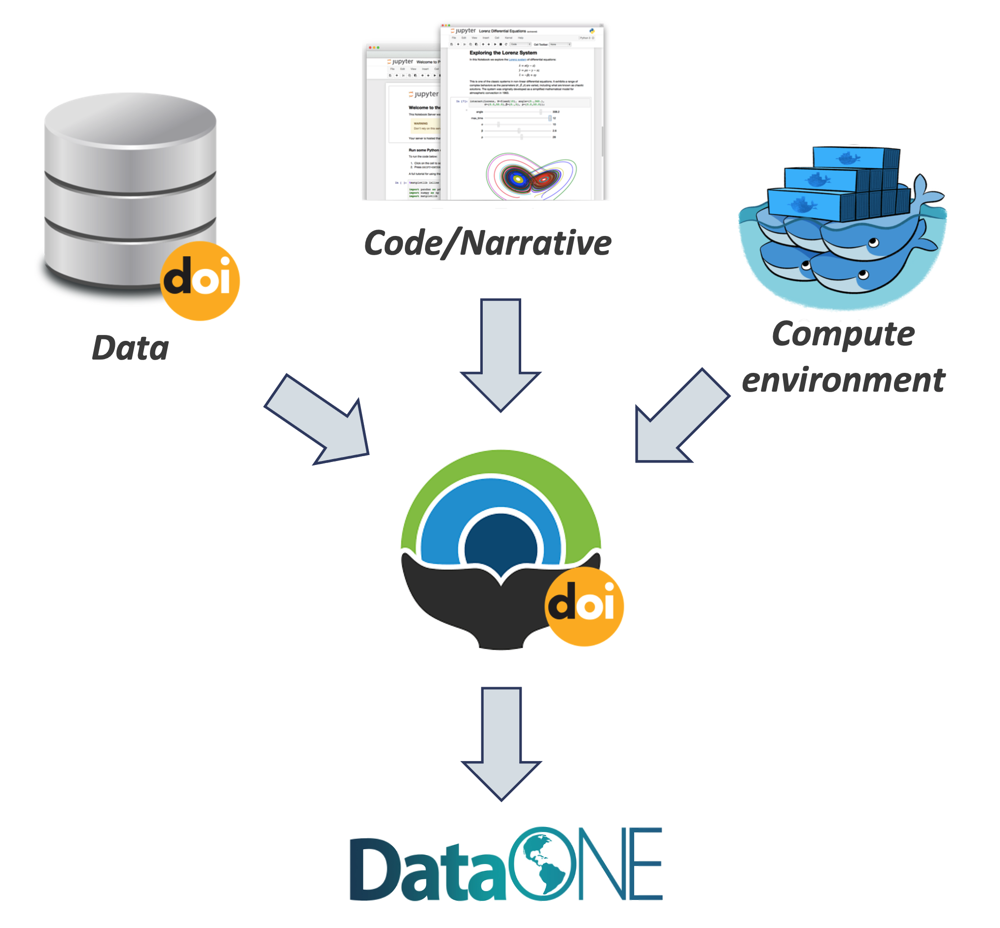
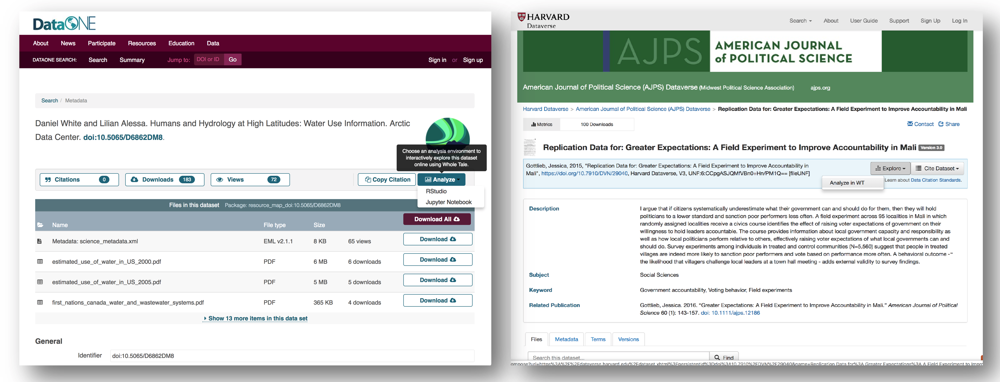

14 Reproducibility and Provenance
14.0.1 Learning Objectives
In this lesson, we will:
- Discuss the concept of reproducible workflows
- Review the importance of computational reproducibility
- Review the utility of provenance metadata
- Overview how R packages are great ways to package work reproducibly
- Learn how to build a reproducible paper in RMarkdown
- Review tools and techniques for reproducibility supported by the NCEAS and DataONE
Reproducible Research: Recap
Working in a reproducible manner:
- increases research efficiency, accelerating the pace of your research and collaborations
- provides transparency by capturing and communicating scientific workflows
- enables research to stand on the shoulders of giants (build on work that came before)
- allows credit for secondary usage and supports easy attribution
- increases trust in science
To enable others to fully interpret, reproduce or build upon our research, we need to provide more comprehensive information than is typically included in a figure or publication. The methods sections of papers are typically inadequate to fully reproduce the work described in the paper.

What data were used in this study? What methods applied? What were the parameter settings? What documentation or code are available to us to evaluate the results? Can we trust these data and methods?
Are the results reproducible?
Computational reproducibility is the ability to document data, analyses, and models sufficiently for other researchers to be able to understand and ideally re-execute the computations that led to scientific results and conclusions.
Practically speaking, reproducibility includes:
- Preserving the data
- Preserving the software workflow
- Documenting what you did
- Describing how to interpret it all
A recent study of publicly-available datasets in the Harvard Database repository containing R files found that only 26% of R files ran without error in the initial execution. 56% were able to be run after code cleaning, showing the importance of good programming practice (Trisovic et al. 2022). The figure below from Trisovic et al. shows a sankey diagram of how code cleaning was able to fix common errors.

Computational Provenance and Workflows
Computational provenance refers to the origin and processing history of data including:
- Input data
- Workflow/scripts
- Output data
- Figures
- Methods, dataflow, and dependencies
When we put these all together with formal documentation, we create a computational workflow that captures all of the steps from inital data cleaning and integration, through analysis, modeling, and visualization.
Here’s an example of a computational workflow from Mark Carls: Mark Carls. Analysis of hydrocarbons following the Exxon Valdez oil spill, Gulf of Alaska, 1989 - 2014. Gulf of Alaska Data Portal. urn:uuid:3249ada0-afe3-4dd6-875e-0f7928a4c171., that represents a three step workflow comprising four source data files and two output visualizations.


This screenshot of the dataset page shows how DataONE renders the workflow model information as part of our interactive user interface. You can clearly see which data files were inputs to the process, the scripts that are used to process and visualize the data, and the final output objects that are produced, in this case two graphical maps of Prince William Sound in Alaska.
From Provenance to Reproducibility

At DataONE we facilitate reproducible science through provenance by:
- Tracking data derivation history
- Tracking data inputs and outputs of analyses
- Preserving and documenting software workflows
- Tracking analysis and model executions
- Linking all of these to publications
Introducing ProvONE, an extension of W3C PROV

ProvONE provides the fundamental information required to understand and analyze scientific workflow-based computational experiments. It covers the main aspects that have been identified as relevant in the provenance literature including data structure. This addresses the most relevant aspects of how the data, both used and produced by a computational process, is organized and represented. For scientific workflows this implies the inputs and outputs of the various tasks that form part of the workflow.

14.0.2 Data Citation and Transitive Credit
We want to move towards a model such that when a user cites a research publication we will also know:
- Which data produced it
- What software produced it
- What was derived from it
- Who to credit down the attribution stack

This is transitive credit. And it changes the way in which we think about science communication and traditional publications.
14.0.3 Reproducible Papers with rrtools
A great overview of this approach to reproducible papers comes from:
Ben Marwick, Carl Boettiger & Lincoln Mullen (2018) Packaging Data Analytical Work Reproducibly Using R (and Friends), The American Statistician, 72:1, 80-88, doi:10.1080/00031305.2017.1375986
This lesson will draw from existing materials:
The key idea in Marwick et al. (2018) is that of the “research compendium”: A single container for not just the journal article associated with your research but also the underlying analysis, data, and even the required software environment required to reproduce your work.

Research compendia make it easy for researchers to do their work but also for others to inspect or even reproduce the work because all necessary materials are readily at hand due to being kept in one place. Rather than a constrained set of rules, the research compendium is a scaffold upon which to conduct reproducible research using open science tools such as:
Fortunately for us, Ben Marwick (and others) have written an R package called rrtools that helps us create a research compendium from scratch.
To start a reproducible paper with rrtools, first close your username-training project. In the project switcher dropdown, just click “close project.” This will set your working directory back to your home directory.
rrtools has created the beginnings of a research compendium for us. At this point, it looks mostly the same as an R package. That’s because it uses the same underlying folder structure and metadata and therefore it technically is an R package (called mypaper). And this means our research compendium will be easy to install, just like an R package.
rrtools also helps you set up some key information like:
- Add a license (always a good idea)
- Set up a README file in the RMarkdown format
- Create an
analysisfolder to hold our reproducible paper
This creates a standard, predictable layout for our code and data and outputs that multiple people can understand. At this point, we’re ready to start writing the paper. To follow the structure rrtools has put in place for us. You’ll notice a paper directory that contains a template Rmd, which references a journal citation style language (CSL) file so that the paper is knitted to a word document formatted for the journal (the Journal of Archaeological Science, in this example). For this lesson, let’s take things a step further with the rticles package. With that in mind, let’s delete the existing paper directory. We’ll create a new one shortly.
14.0.4 Reproducible Papers with rticles
The rticles package provides a lot of other great templates for formatting your paper specifically to the requirements of many journals. In addition to a custom CSL file for reference customization, rticles supports custom LATeX templates that fit the formatting requirements of each journals. After installing rticles with a command like install.packages('rticles') and restarting your RStudio session, you will be able to create articles from these custom templates using the File | New File | R Markdown... menu, which shows the following dialog:

Select the “PNAS” template, give the file a name and set the location of the files to be mypaper, and click “OK”. You can now Knit the Rmd file to see a highly-targeted article format, like this one for PNAS:

Use rrtools to generate the core directory layout and approach to data handling, and then use articles to create the structure of the paper itself. The combination is incredibly flexible.
Here are more things we can do with our research compendium:
- Edit
./analysis/paper/paper.Rmdto begin writing your paper and your analysis in the same document - Add any citations to
./analysis/paper/pnas-sample.bib - Add any longer R scripts that don’t fit in your paper in an
Rfolder at the top level - Add raw data to
./data/raw_data - Write out any derived data (generated in
paper.Rmd) to./data/derived_data - Write out any figures in
./analysis/figures
You can then write all of your R code in your RMarkdown, and generate your manuscript all in the format needed for your journal (using it’s .csl file, stored in the paper directory).
Here is a look at the beginning of the Rmd:

And the rendered PDF:

14.0.5 Adding renv, Docker, Binder
rrtools has a couple more tricks up it’s sleeve to help your compendium be as reproducible and portable as possible. If your R project has been initialized as a git repository, when you run rrtools::use_readme_rmd(), it will automatically create a special file called Dockerfile in a .binder directory. Binder is a platform that allows you to run notebooks in a repository in an executable environment using the cloud. This means that if I write a paper, host it on GitHub, and enable Binder, anyone can go to my repository, click the binder button, and be launched into an RStudio session online with all of my code ready to run and explore. This is an amazing technology, though there are limitations. Currently it is free, but it likely won’t exist forever, especially in the current format where they are giving out lots of free computing time. Additionally, the memory limits are fairly low, 2 GB maximum, so any memory intensive analyses would probably crash. To check out real Binder, Ben Marwick (author of rrtools) has one for figures of of a paper he wrote at benmarwick/JPA_Palaeolithic_Projectiles. As a warning, it may take a long time to spin up the image.
Binder is built upon a technology called Docker. Docker containers are a standard unit of software that packages up code and all its dependencies so the application runs quickly and reliably from one computing environment to another. A container is an “image” of all the software specified, and this image can be run on other computers such that the software stack looks exactly as you specify. This is important when it comes to reproducibility, because if I’m running someone elses code, I may get different results or errors if I’m using different versions of software (like an old version of dplyr, for example) than they are. A Dockerfile contains the instructions for how to build the image. rrtools creates a Dockerfile that first loads a standard image for using R with binder, and then has more instructions for how to create the environment so that it has the very specific R packages and versions you need.

To capture the R packages and versions this project depends on, the renv package is used. If you run renv::init(), it will initiate tracking of the R packages in your project. renv::init() automatically detects dependencies in your code (by looking for library calls, at the DESCRIPTION file, etc.) and installs them to a private project specific library. Importantly, this means that your project mypaper can use a different version of dplyr than another project which may need an older version without any hassle. renv also write the package dependencies to a special file in the repository called renv.lock. In the Dockerfile for Binder, the renv.lock file is read, and the versions of the packages needed are installed using renv::restore(). While you are developing code, if any of your packages get updated, renv::snapshot() will update the renv.lock file and your project-installed packages.
Finally, the rrtools package also has a function called rrtools::use_dockerfile(), which will create a Dockerfile for your R project (slightly different than Binder), so that an image can be created for other uses. One of them, which rrtools sets up for you when you run that function, is to use it in a GitHub Action. Actions are processes that are triggered in GitHub events (like a push) that run automatically. In this case, the Action that is set up will make is so that your image is created on GitHub, some code that knits your paper is run, and an updated version of your paper is knit. This is called “continuous integration,” and is extremely convenient for developing products like this, since the build step can be taken care of automatically as you push to your repository.

The 5th Generation of Reproducible Papers

Whole Tale simplifies computational reproducibility. It enables researchers to easily package and share ‘tales’. Tales are executable research objects captured in a standards-based tale format complete with metadata. They can contain:
- data (references)
- code (computational methods)
- narrative (traditional science story)
- compute environment (e.g. RStudio, Jupyter)

By combining data, code and the compute environment, tales allow researchers to:
- re-create the computational results from a scientific study
- achieve computational reproducibility
- “set the default to reproducible.”
They also empower users to verify and extend results with different data, methods, and environments. You can browse existing tales, run and interact with published tales and create new tales via the Whole Tale Dashboard.

By integrating with DataONE and Dataverse, Whole Tale includes over 90 major research repositories from which a user can select datasets to make those datasets the starting point of an interactive data exploration and analysis inside of one of the Whole Tale environments. Within DataONE, we are adding functionality to work with data in the Whole Tale environment directly from the dataset landing page.


Full circle reproducibility can be achieved by publishing data, code AND the environment.